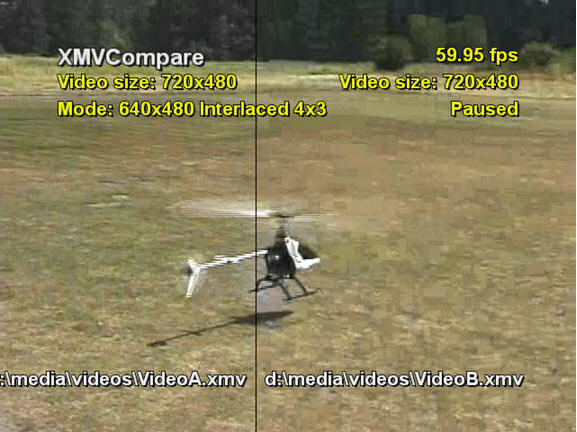
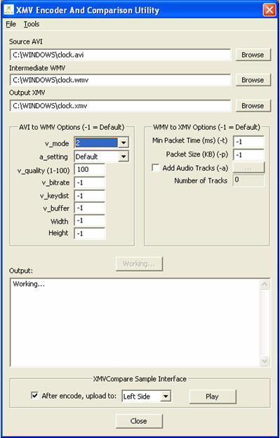

By Gus Apostol and Mark Mansur, Xbox Advanced Technology Group
Video compression comprises both science and art. The science part is that you know what numbers (video dimensions, frame rate, audio quality, and so on) you want to start with and the restrictions (bit rate, size of final video, and so on) that you have to follow to produce a final result. The art part is to make the final product look and sound good within the constraints of the system. This paper will help you with the science part. You will have to determine whether the your video looks good, or good enough.
Keep in mind that, in general, one set of encoding options that result in a good final video compression may not work on another video. The process of video encoding requires you to:
Xbox Media Video (XMV) is not an encoded video format. It is just a Windows Media Video (WMV) file with the data reordered for performance on the Microsoft® Xbox® video game system. All encoding is done when going from raw video (AVI) to WMV. WMV encoding was not designed for full motion video. It was designed for streaming video over the Internet, with bandwidth as low as a 56-KB line. Keep this in mind when your XMV video does not look as good as MPEG2.
For capturing motion, enable vertical lock to eliminate tearing. For capturing stills, enable antialiasing. We recommend exporting the video and audio separately and adding them later during the WMV to XMV conversion stage (see Step 6 in the XMVTool Tips and Recommended Settings section, following). The following are a few setting recommendations:
If resizing or deinterlacing is required, you can perform it using the tool of your choice. For resizing, choose a resolution of 640×480 and a precise bicubic filter, if available. Make sure the AVI output is uncompressed to retain full quality. Using a compressed format reduces the final XMV quality.
In working with converting AVI to WMV for performance and quality, we can make some recommendations as a starting point. The following settings for the Windows Media Encoding Utility (WM8EUtil) tool have worked well for our tested content:
wm8eutil -input <avi file> -output <wmv file> -v_mode 1 -v_bitrate 1600000 -v_keydist 4 -v_buffer 10000 -v_quality 97
or, for slightly higher quality:
wm8eutil -input <file>.avi -output <file>.wmv -v_mode 0 -v_bitrate 2300000 -v_keydist 3 -v_buffer 5000 -v_quality 100 -a_setting 0
Notice, from the example above, that the bit rate is 2.3 megabits per second (Mbps). This rate is for streaming from a hard drive. It's nearly impossible to achieve this rate on a DVD.
WM8EUtil has two constant bit rate (CBR) and two variable bit rate (VBR) mode settings. If you require streaming, use the setting -v_mode 1 as it produces a better encoding with two passes, versus the one pass of -v_mode 0. The first VBR mode is -v_mode 2, which is quality-based; it uses the -v_quality argument to select how much compression to do and uses whatever bit rate is needed based on compression requirements. The other mode is -v_mode 3, which is bit rate–based. This mode uses the contents of the -v_bitrate argument to select how much compression to do. So, for example, you might use either -v_mode 3 -v_quality 100 or -v_mode 2 -v_bitrate 75000000.
In working with tuning XMV file playback for performance and quality, we have found that it is not an exact science and requires quite a bit of tweaking for each individual scenario. We can, however, make some recommendations as a starting point.
xmvtool -a mymovie.avi -v mymovie.wmv -o mymovie.xmv
xmvtool -v VideoSource.wmv -a AudioSourceLR.wav -a AudioSourceCLFE.wav -a AudioSourceLSRS.wav -o MyVideo.xmv
-v_mode 3 -v_bitrate 1500000 -v_buffer 2000 -v_quality 95 -v_keydist 10 -v_mode 1 -a_setting 96_44_2 -v_bitrate 1600000 -v_buffer 10000 -v_quality 97 -v_keydist 10
Two tools added in the December 2003 release of the XDK make the process of tuning your videos considerably easier. The XMVCompare sample can be found in your XDK installation directory under Samples\Xbox\Video\XMVCompare\, and the XMVEncoder tool can be found under Tools\Win32\Graphics\XMVEncoder\.
The XMVCompare sample lets you quickly and easily compare the differences between encoder settings by displaying two videos side by side and seamlessly. Videos are uploaded to your Xbox development kit (or debug kit) into the sample's Media\Videos directory and are then immediately available to the sample for display. Consult the sample Readme.txt file and the sample's Help screen for more information on basic usage. The following illustration shows a typical XMVCompare screen.

The XMVEncoder tool makes use of WM8EUtil and XMVTool to make encoding of video files a single-tool, GUI-enabled process. Use of XMVEncoder assumes basic knowledge of WM8EUtil and XMVTool.
XMVEncoder also integrates use of the XMVCompare sample by uploading freshly encoded videos directly to the sample's video directory and assigning the encoded video to the side of the XMVCompare display specified in the encoding tool. XMVEncoder then plays your original video and your newly encoded video using the XMVCompare sample. Using this process, the effects of changes made during the encoding process using both WM8EUtil and XMVTool are immediately apparent, allowing rapid tweaking and tuning of your videos. The following illustration shows the XMVEncoder interface.
